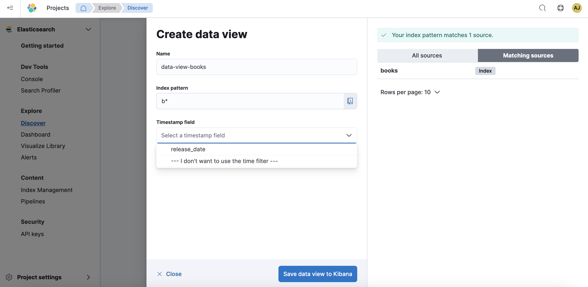
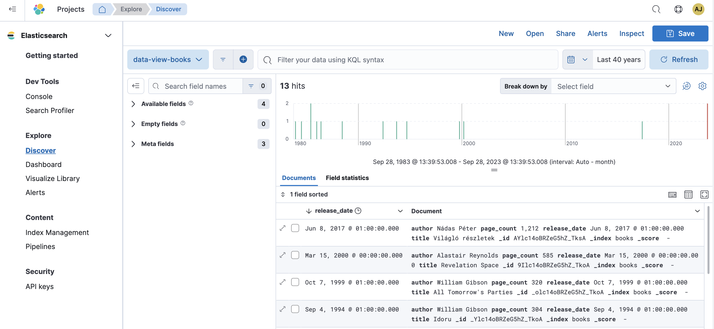

Discover your data
edit[preview] This functionality is in technical preview and may be changed or removed in a future release. Elastic will work to fix any issues, but features in technical preview are not subject to the support SLA of official GA features.
With Discover, you can quickly search and filter your data, get information about the structure of the fields, and display your findings in a visualization. You can also customize and save your searches and place them on a dashboard.
Explore and query your data
editThis tutorial shows you how to use Discover to search large amounts of data and understand what’s going on at any given time. This tutorial uses the book sample data set from the Get started page.
You’ll learn to:
- Select data for your exploration, set a time range for that data, search it with the Kibana Query Language, and filter the results.
- Explore the details of your data, view individual documents, and create tables that summarize the contents of the data.
- Present your findings in a visualization.
At the end of this tutorial, you’ll be ready to start exploring with your own data in Discover.
Find your data
editTell Kibana where to find the data you want to explore, and then specify the time range in which to view that data.
- Once the book sample data has been ingested, navigate to Explore → Discover and click Create data view.
-
Give your data view a name.
 -
Start typing in the Index pattern field, and the names of indices, data streams, and aliases that match your input will be displayed.
-
To match multiple sources, use a wildcard (*), for example,
b*and any indices starting with the letterbdisplay. -
To match multiple sources, enter their names separated by a comma. Do not include a space after the comma. For example
books,magazineswould match two indices:booksandmagazines. -
To exclude a source, use a minus sign (-), for example
-books.
-
To match multiple sources, use a wildcard (*), for example,
-
In the Timestamp field dropdown, and then select
release_date.- If you don’t set a time field, you can’t use global time filters on your dashboards. Leaving the time field unset might be useful if you have multiple time fields and want to create dashboards that combine visualizations based on different timestamps.
- If your index doesn’t have time-based data, choose I don’t want to use the time filter.
-
Click Show advanced settings to:
- Display hidden and system indices.
- Specify your own data view name. For example, enter your Elasticsearch index alias name.
- Click Save data view to Kibana.
-
Adjust the time range to view data for the Last 40 years to view all your book data.

Explore the fields in your data
editDiscover includes a table that shows all the documents that match your search. By default, the document table includes a column for the time field and a column that lists all other fields in the document. You’ll modify the document table to display your fields of interest.
-
In the sidebar, enter
auin the search field to find theauthorfield. -
In the Available fields list, click
authorto view its most popular values.Discover shows the top 10 values and the number of records used to calculate those values.
-
Click
 to toggle the field into the document table. You can also drag the field from the Available fields list into the document table.
to toggle the field into the document table. You can also drag the field from the Available fields list into the document table.
Add a field to your data view
editWhat happens if you forgot to define an important value as a separate field? Or, what if you want to combine two fields and treat them as one? This is where runtime fields come into play. You can add a runtime field to your data view from inside of Discover, and then use that field for analysis and visualizations, the same way you do with other fields.
- In the sidebar, click Add a field.
-
In the Create field form, enter
hellofor the name. - Turn on Set value.
-
Define the script using the Painless scripting language. Runtime fields require an
emit().emit("Hello World!"); - Click Save.
- In the sidebar, search for the hello field, and then add it to the document table.
-
Create a second field named
authorabbrevthat combines the authors last name and first initial.String str = doc['author.keyword'].value; char ch1 = str.charAt(0); emit(doc['author.keyword'].value + ", " + ch1);
-
Add
authorabbrevto the document table.
Search your data
editOne of the unique capabilities of Discover is the ability to combine free text search with filtering based on structured data. To search all fields, enter a simple string in the query bar.
To search particular fields and build more complex queries, use the Kibana Query language. As you type, KQL prompts you with the fields you can search and the operators you can use to build a structured query.
Search the book data to find out which books have more than 500 pages:
-
Enter
p, and then select page_count. - Select > for greater than and enter 500, then click the refresh button or press the Enter key to see which books have more than 500 pages.
Filter your data
editWhereas the query defines the set of documents you are interested in, filters enable you to zero in on subsets of those documents. You can filter results to include or exclude specific fields, filter for a value in a range, and more.
Exclude documents where the author is not Terry Pratchett:
-
Click next to the query bar.
- In the Add filter pop-up, set the field to author, the operator to is not, and the value to Terry Pratchett.
- Click Add filter.
- Continue your exploration by adding more filters.
- To remove a filter, click the close icon (x) next to its name in the filter bar.
Look inside a document
editDive into an individual document to view its fields and the documents that occurred before and after it.
-
In the document table, click the expand icon
 to show document details.
to show document details.
- Scan through the fields and their values. If you find a field of interest, hover your mouse over the Actions column for filters and other options.
- To create a view of the document that you can bookmark and share, click Single document.
- To view documents that occurred before or after the event you are looking at, click Surrounding documents.
Save your search for later use
editSave your search so you can use it later to generate a CSV report, create visualizations and Dashboards. Saving a search saves the query text, filters, and current view of Discover, including the columns selected in the document table, the sort order, and the data view.
- In the upper right toolbar, click Save.
- Give your search a title.
- Optionally store tags and the time range with the search.
- Click Save.
Visualize your findings
editIf a field can be aggregated, you can quickly visualize it from Discover.
-
In the sidebar, find and then click
release_date. -
In the popup, click Visualize.
Kibana creates a visualization best suited for this field.
-
From the Available fields list, drag and drop
page_countonto the workspace. - Save your visualization for use on a dashboard.
For geographical point fields, if you click Visualize, your data appears in a map.
Share your findings
editTo share your findings with a larger audience, click Share in the upper right toolbar.
Generate alerts
editFrom Discover, you can create a rule to periodically check when data goes above or below a certain threshold within a given time interval.
- Ensure that your data view, query, and filters fetch the data for which you want an alert.
-
In the toolbar, click Alerts → Create search threshold rule.
The Create rule form is pre-filled with the latest query sent to Elasticsearch Serverless.
- Configure your Elasticsearch Serverless query and select a connector type.
- Click Save.
For more about this and other rules provided in alerting features, go to Alerting.